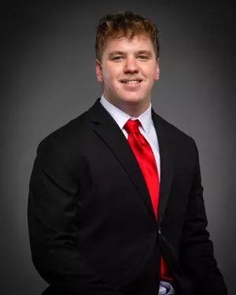

Jack Teller
President
Sophomore
Data Science and Applied Math
Jack helps set the overall direction of the Marist AI Club and works closely with the rest of the executive board to organize meetings, shape club initiatives, and create an environment where students feel comfortable exploring new ideas. He is especially interested in building a club culture that balances technical curiosity with collaboration and accessibility.
AI Interest Predictive modeling and AI for data-driven decision-making
Focus Area Club planning, long-term growth, and student engagement
What He Brings Analytical thinking, organization, and a collaborative leadership style